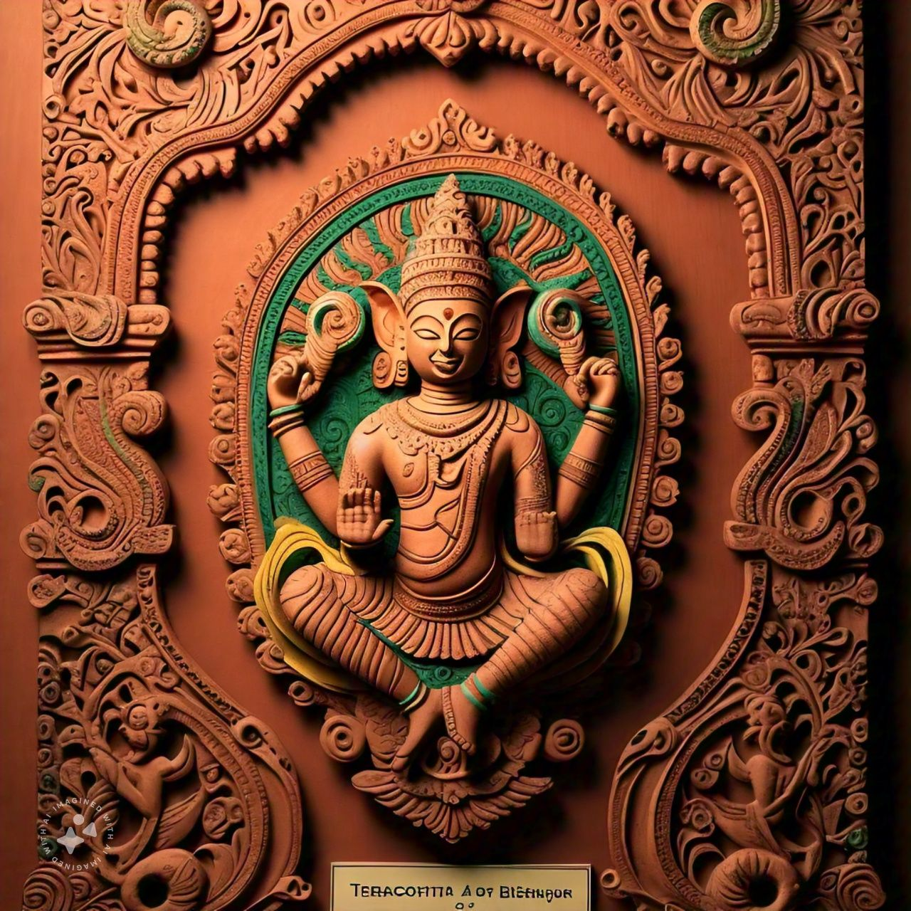
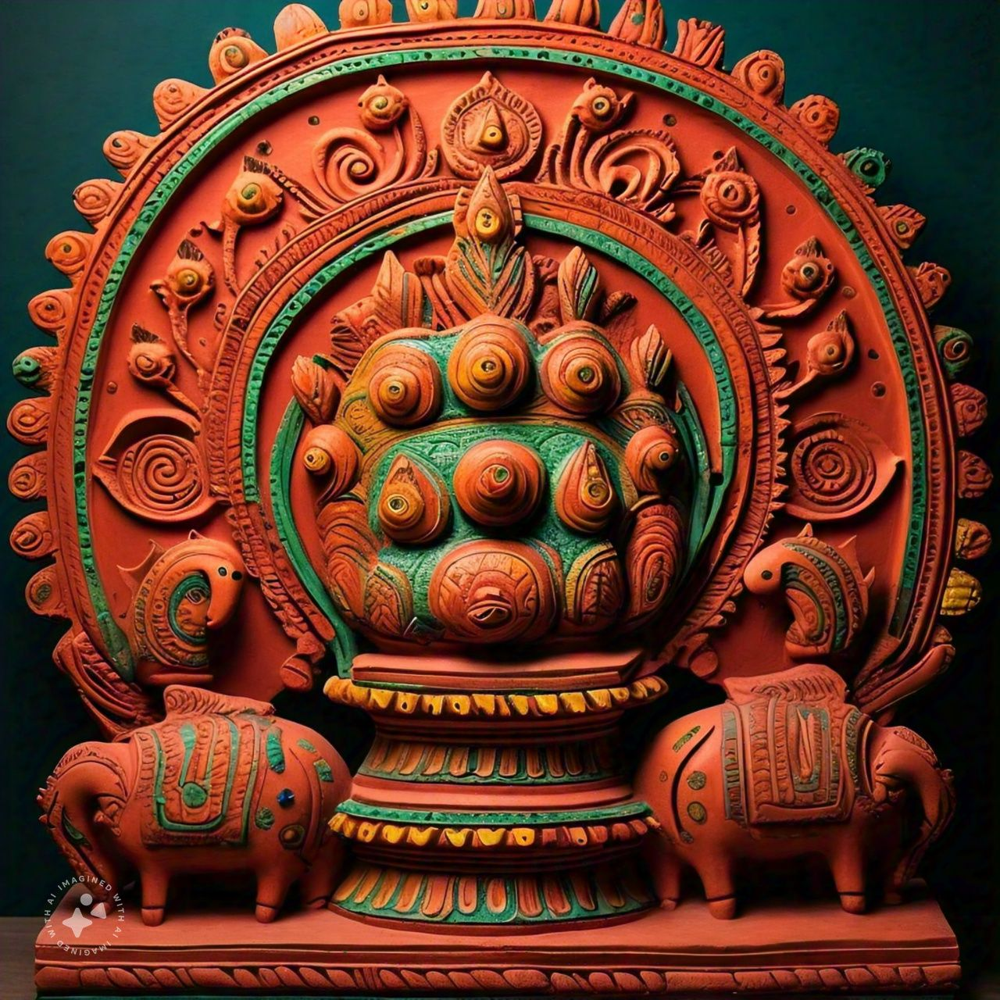

Terracotta Arts of Bishnupur
The terracotta arts of Bishnupur, West Bengal, are celebrated for their exquisite craftsmanship and historical significance, flourishing under the Malla kings in the 17th and 18th centuries. Renowned for intricate sculptures and pottery, these artworks often depict deities and folklore. The region is especially famous for its terracotta temples, featuring elaborate carvings that tell mythological stories. With unique glazing techniques and a deep connection to tradition, Bishnupur’s terracotta arts remain a vibrant testament to its rich cultural heritage.

